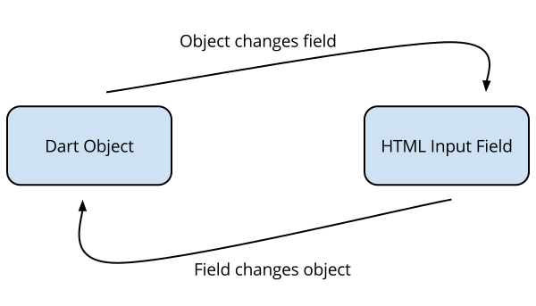

Dart’s Web UI package offers live, two-way data binding implemented with an efficient observable engine. The new observable system propagates changes proportional to the number of changes, instead of the number of watched expressions. This results in less work per event loop and more responsive web UIs.
This article covers Web UI’s observables and how to use them with interactive web apps. To learn more about Web UI, try our tutorials or articles.
Web UI helps you efficiently bind application data to HTML, and vice versa, with observables and observers. Observables are variables, fields, or collections that can be observed for changes. Observers are functions that run when an observable changes.
When an observable and and observer are connected, they are bound. For example, an HTML input field can be bound to some application data. There are two kinds of bindings with Web UI: one-way and two-way. A one-way binding updates some HTML text when application data changes. A two-way binding joins an input field to application data, such that whenever application data or field value changes, the other side of the binding also changes.

Any variable, class field, class, setter, getter, or collection can be observable. Use the @observable metadata annotation to tell Web UI “please observe this, other things care when it changes.” The Web UI (dwc) looks for @observable and generates the necessary boilerplate code to track the changes for you.
Instead of asking every possible observable “Did you change?” on every event loop over and over, Web UI has an efficient mechanism to notify only the right observers at the right time. When data is read from or written to an observable, Web UI stores a small record of the interaction. At the end of the event loop, Web UI updates only the observers that correspond to each recorded interation.
Web UI can observe a variable, and update HTML whenever the variable points to a new object.
Here is a simple example of data binding between a top-level Dart variable and inline HTML text. This example also includes declarative event binding.
<!DOCTYPE html>
<html>
<head>
<meta charset="utf-8">
<title>Hello World</title>
<link rel="stylesheet" href="App.css">
</head>
<body>
<h1>Hello Web UI</h1>
<p>Web UI is {{ superlative }}</p>
<button id="change-it" on-click="changeIt()">Change</button>
<script type="text/javascript" src="dart.js"></script>
<script type="application/dart" src="hello_world.dart"></script>
</body>
</html>
A variable wrapped with {{ and }} is observed, and its
object is converted to a string and inserted into the DOM. Any time the variable
is changed, the HTML is updated.
Here is the Dart code that supports this simple app:
library hello_world;
import 'package:web_ui/web_ui.dart';
@observable
String superlative = 'awesome';
const List<String> alternatives =
const <String>['wicked cool', 'sweet', 'fantastic', 'wonderful'];
int _alternativeCount = 0;
String get nextAlternative => alternatives[_alternativeCount++ % alternatives.length];
changeIt() {
superlative = nextAlternative;
}
main() { }
The superlative top-level variable is the same variable that is observed in the
HTML page with {{ superlative }}. The @observable
metadata tells Web UI to observe this variable for changes.
Every time the button is clicked, the changeIt() function is run and the
superlative variable is pointed to a different string. Because superlative
changed, the HTML page changes, too. This is data binding in action!
You don’t have to write code to deal with propagating changes, finding HTML elements, or updating HTML elements. All the of the mechanics for observing changes and updating HTML is provided by Web UI.
This example shows how to observe a variable, but not actually the object a variable points to. Read the next section to learn how to observe an object’s state.
Web UI can also observe the internal state of objects. An observable variable only signals when the variable points to another object, but an observable class signals when any field on the object changes. This distinction is subtle but very important.
Consider this example, which include a Person class. Here is a one-way binding
between the expression person.name and HTML:
<p>Hello {{person.name}}!</p>
<p><button on-click="newName()">Change Name</button></p>
Here is the corresponding Dart code:
library observe_object;
import 'package:web_ui/web_ui.dart';
@observable
class Person {
String name;
Person(this.name);
}
final Person person = new Person('Bob');
const List<String> names = const <String>['Sally', 'Alice', 'Steph'];
int _nextCounter = 0;
String get nextName => names[_nextCounter++ % names.length];
newName() {
person.name = nextName;
}
main() {}
We don’t need to observe the variable person because it always refers to the same object (it is marked as final). We need to observe the Person class because the name field changes. Therefore, @observable moved from the variable to the class.
Marking a class as @observable is the same as marking all of its fields as
@observable. You can choose to mark individual fields, individual getters and
setters, or the entire class.
To observe a List, Map, Set, or Iterable, wrap it with toObservable(). A
change to the collection, such as an add, remove, or clear, is intercepted by
the observable wrapper and recorded. Only changes to the collection, and not
changes to the items themselves, will signal a change event.
Here is an example of an observable list. In the HTML, a template is rendered with the contents from the timestamps list.
<p>
<button on-click="addTimestamp()">Add Timestamp</button>
<button on-click="clear()">Clear</button>
</p>
<ul>
<li template repeat="ts in timestamps">{{ts}}</li>
</ul>
Here is the corresponding Dart code:
library observe_list;
import 'package:web_ui/web_ui.dart';
final List<DateTime> timestamps = toObservable([]);
void addTimestamp() {
timestamps.add(new DateTime.now());
}
void clear() {
timestamps.clear();
}
main() {}
Notice how timestamps is really a wrapped observable list. Any change to the list, such as an add, remove, or clear, triggers the template in the HTML to be re-rendered.
The toObservable() wrapper is shallow, in that it doesn’t make all the individual contents of a collection observable. If you want to observe the changes to the items themselves, use @observable on the classes of the items stored in the list.
Consider the case of a Person class that has a nested Address class. Use @observable on both classes to ensure all fields on person and address are observable.
Here is the Dart code:
import 'package:web_ui/web_ui.dart';
@observable
class Person {
String name;
Address address;
}
@observable
class Address {
String city;
}
@observable
Person person;
main() {
person = new Person()
..name = 'Clark Kent'
..address = (
new Address()
..city = 'Metropolis'
);
}
And here is the HTML:
<p>
Name: <input type="text" bind-value="person.name">
</p>
<p>
City: <input type="text" bind-value="person.address.city">
</p>
<p>Person's name: {{person.name}}</p>
<p>Person's Address's city: {{person.address.city}}</p>
We’ve talked about how the observable system tracks changes to variables, fields, and collections. This is only half the story. To actually respond to the change, you also need observers. An observer observes an observable expression and runs a function when the expression changes.
Most of the time, you don’t need to explicitly create observers because the dwc transformer generates them for you (through bindings between HTML and observed expressions). We don’t recommend that you manually recreate the functionality of bindings, but you can create your own observers when you need some code to respond to changes.
To illustrate how observers work, let’s manually recreate some of what the dwc does for you.
Here is some HTML with a placeholder span element that gets updated when a button is clicked.
<p>The time is <span id="msg"></span></p>
<p><button on-click="updateMsg()">Update</button></p>
Here is the corresponding Dart code.
library manual_watching;
import 'dart:html';
import 'package:web_ui/web_ui.dart';
@observable
String msg;
updateMsg() {
msg = new DateTime.now().toString();
}
main() {
observe(() => msg, (_) {
querySelector('#msg').text = msg;
});
}
A new observer is created to watch the msg object. When msg changes, a callback is run to update the span with a new message.
When a new observer is created, it first runs the expression to be observed. It will detect each and every Observable field that was read by that expression, and listen for changes to that field. If the final value is Observable, it listens for any changes. This direct connection is one reason why Web UI’s observables are so efficient.
Web UI includes a transformer, named Dart Web Compiler (dwc), that converts your code into vanilla Dart and dart:html code so that it can ultimately be compiled to vanilla JavaScript and HTML. The dwc looks for @observable metadata, and generates the appropriate getters and setters that record changes to fields, variables, etc.
For example, here is a class Person that has @observable metadata:
@observable
class Person {
String name;
Person(this.name);
}
Here is the generated Person class:
import 'package:web_ui/web_ui.dart';
@observable
class Person extends Observable {
String __$name;
String get name {
if (__observe.observeReads) {
__observe.notifyRead(this, __observe.ChangeRecord.FIELD, 'name');
}
return __$name;
}
set name(String value) {
if (__observe.hasObservers(this)) {
__observe.notifyChange(this, __observe.ChangeRecord.FIELD, 'name',
__$name, value);
}
__$name = value;
}
Person(name) : __$name = name;
}
Notice how the original name field is converted into setters and getters that integrate the observable mechanics. This is where Web UI gets much of its performance from, because it knows exactly what fields changed. Instead of asking every single watched expression, “Did you change?”, it knows exactly what happened.
Thanks to Dart’s getters and setters, consumers of the Person class are unaware it changed. Getters and setters look like regular fields in Dart. Here is an example:
main() {
var person = new Person('Bob');
person.name = 'Alice'; // goes through the setter, which records the change
}
As another example, here is an example of @observable with a top-level variable.
library foo; import 'package:web_ui/web_ui.dart'; @observable String superlative;
Here is the generated code:
import 'package:web_ui/web_ui.dart';
String __$superlative = 'awesome';
String get superlative {
if (__observe.observeReads) {
__observe.notifyRead(__changes, __observe.ChangeRecord.FIELD, 'superlative');
}
return __$superlative;
}
set superlative(String value) {
if (__observe.hasObservers(__changes)) {
__observe.notifyChange(__changes, __observe.ChangeRecord.FIELD, 'superlative',
__$superlative, value);
}
__$superlative = value;
}
Notice how you can have top-level getters and setters, too. Cool!
When an observable variable, field, or collection is changed, the following steps occur immediately:
Then, right before the end of the current event loop (in theory, before painting), the following actions occur:
The change propagation logic attempts to detect infinite loops to avoid scenarios where one change triggers another change in a cycle.
The Web UI package provides an efficient way to observe variables, classes,
fields, getters and setters, and even collections. The dwc generates
code from @observable metadata, so that the system can track exactly what data
was changed. Observables and observers are used together to implement one-way
and two-way data bindings.
Learn more about Web UI, follow a tutorial, or join the Web UI mailing list. Dart’s Web UI is open source on Github, participation most welcome!